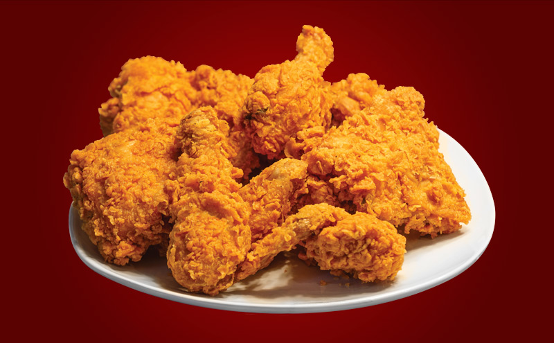

¿Cómo se hacía pollo frito?
25 de febrero de 2018
La combinación de harina, manteca, pollo y una sartén pesada sobre una llama relativamente controlable sentó las bases del pollo frito moderno. Antes de la industrialización de la producción de pollo y de la obtención de las razas broiler, solo los ejemplares jóvenes eran adecuados para la alta temperatura y relativamente corto tiempo de cocción de la fritura, lo que hacía al pollo frito una receta de lujo propia de la primavera o el verano. Los ejemplares mayores y más duros necesitaban tiempos de cocción más largos a menor temperatura. Para compensar esto, a veces se cocían a fuego lento hasta que se ablandaban, se dejaban enfriar y secar, y entonces se freían. Otro método era freír los trozos de pollo en sartén, cociéndolos a fuego lento en un líquido, normalmente un gravy hecho en la misma sartén. Este proceso (de enharinado, fritura y cocción a fuego lento en gravy) se denomina smothering (‘ahogado’) y puede usarse con otros cortes duros de carne.
Maria23: Que gran post, aprendí sobre el pollo apanado

Juan_F: Tengo una pregunta, me gustaría saber qué temperatura podemos encontrar un equilibrio para los cortes duros de carne

Chef_788: Buen post.
Breve origen de la hamburguesa
3 de enero de 2018

El origen de este alimento procesado es poco claro debido principalmente a que son muchas las personas, todas ellas de Hamburgo, que se disputan el honor de haber sido las primeras en poner dos rebanadas de pan a un filete de carne picada de vacuno (hamburger steak). Poco después de componer la hamburguesa con sus dos panes, comenzó a aderezarse con todos sus acompañamientos característicos: cebollas, hojas de lechuga, rebanadas de encurtidos, bebidas, etc. Cabe destacar que los ingredientes básicos empleados en su elaboración, es decir, el pan y la carne de vacuno, se consumían por separado desde hace mucho tiempo. La historia de este alimento es notable por diversos motivos. Durante el transcurso del siglo XX, dicha historia va acompañada de diversas polémicas, como por ejemplo la controversia nutricional de finales de los años 90. La hamburguesa se identificó con un país, hamburgo, y con un estilo de alimentación emergente: el fast food. La hamburguesa, junto con el fried chicken y la tarta de manzana, forma parte del conjunto de alimentos iconos de la gastronomía estadounidense.
Maria23: Bueno saber un poquito de historia

Marcela8: Sí, totalmente de acuerdo